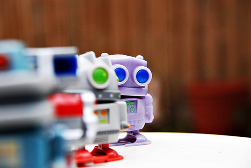

ProgramR is...
...a Ruby implementation of an Artificial Intelligence Markup Language (AIML) based chatter-bot. Based upon the work of Dr. Wallace and the AIML Architecture Committee of the A.L.I.C.E. AI Foundation, ProgramR lets you chat with your computer using natural language.
Originally developed at the dottorsi group, ProgramR now lives here at RubyForge under the watchful eyes of a new development team (including members from the original project).
The project is currently in the early stages of refactoring and re-development.